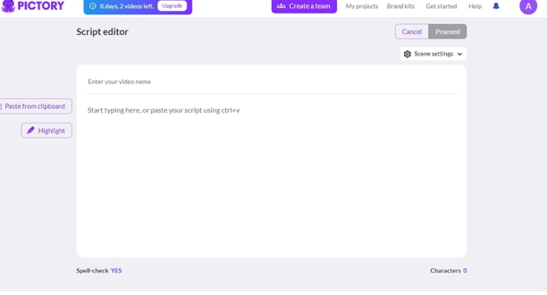

Top 4 Pictory AI Alternatives For Creating Proper Videos
Pictory AI has been a good addition to the AI tools for unique video generation. With multiple supported formats, users could create videos out of their textual scripts. However, the practicality offered by Pictory AI was quite restricted from the user's expectations. As a result, the search for better Pictory AI alternatives came among the top searches. In this article, our focus will reside on discussing an alternative to Pictory, which features prominent functionality.
Flixier
Starting with our first Pictory AI alternative, Flixier can serve as a good video creation platform. It has been developed as a video editing platform for online users who seek a cognitive and diverse editing experience.
Key Features
1. To make your videos interactive, you can use its auto-subtitle generator to create automatic subtitles in your language choice.
2. To create finer quality videos, manually add different elements and transitions to your videos.
3. To cater to video creation in presentation format, there are options to add animations to videos.
Pros
- Offers a clean interface for video creation.
- You can manage your video editing properly across the track manager.
Cons
- There are few AI features offered in Flixier compared to other competitive video editors.
Pricing Plans
| Plans | Pricing |
|---|---|
| Pro | $6/month |
| Business | $12/month |
HitPaw Edimakor

Coming onto one of the best Pictory alternatives in the market, HitPaw Edimakor is an offline video editing platform. While the service provides extensive video editing options, it is integrated with a dedicated AI video creation feature. This helps creators innovate new ideas into their video editing portfolio by presenting a simple script. The overall learning curve in HitPaw Edimakor is quite easy, making it both professional and effective for video creation.
Key Features
1. HitPaw Edimakor provides the option of directly downloading video and audio content onto its platform.
2. There are many effective AI functionalities available in HitPaw Edimakor that make video creation seamless.
3. To manage the speed of a video, this unique Pictory alternative provides a speed ramping function for creating better video scenes.
Pros
- To make your created videos professional, you can use the tool’s AI Noise Remover feature to enhance its audio quality.
- While creating videos with AI, you are required to provide a video topic with some basic details. HitPaw Edimakor generates the entire video script before generating a video.
Cons
- It adds a watermark across the created video if used in the trial version.
Pricing Plans
| Plans | Pricing |
|---|---|
| Windows 1 Month | $19.95 |
| Windows 1 Year | $49.95 |
Descript

The concept of video editing is exceptionally different from Descript. This Pictory-free alternative provides users with the ability to manage their videos through its script. While the service can be utilized for a diverse set of purposes, Descript can also be used to make proper video edits. From selecting a different template to adding text, transitions, and effects, all major functions are provided in Descript.
Key Features
1. After adding a video for editing, it is first transcribed by Descript for text-based editing.
2. You can utilize the AI script enhancement feature to improve any section of your video script.
3. When creating videos from scratch, the service also offers an Overdub feature. It helps users in changing the audio dubbing within the video through text.
Pros
- Provides highly professional scripts for creating good video content.
- It can be used both online and offline for video creation purposes.
Cons
- The learning curve associated with Descript is a little complicated compared to other AI video tools.
Pricing Plans
| Plans | Pricing |
|---|---|
| Creator | $12/month |
| Pro | $24/month |